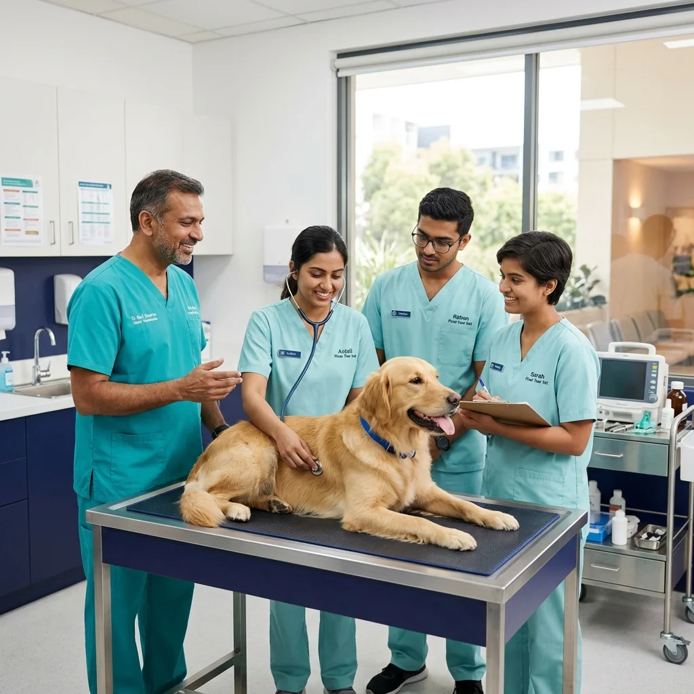
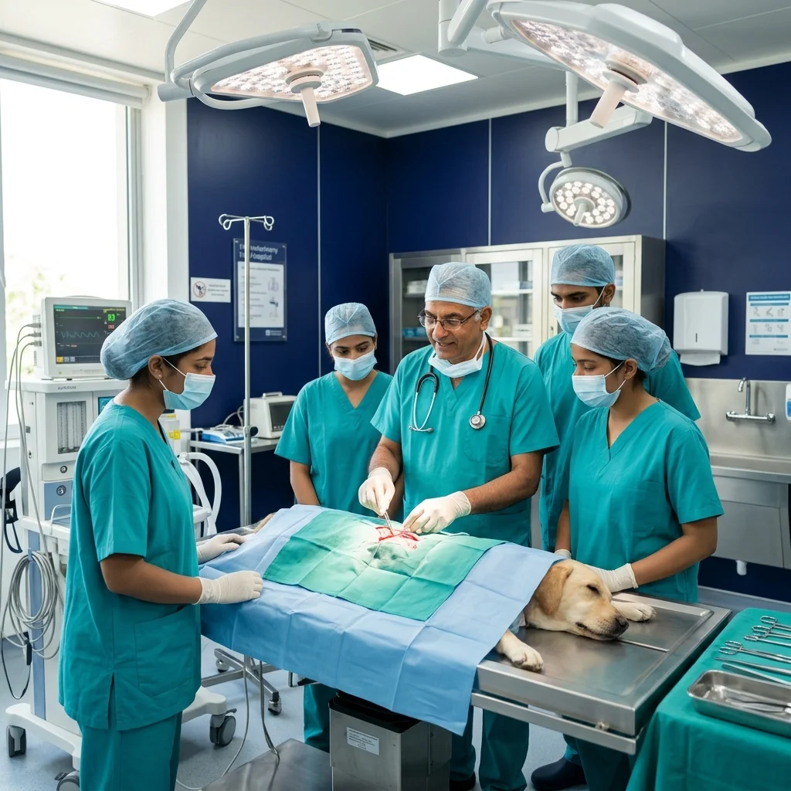
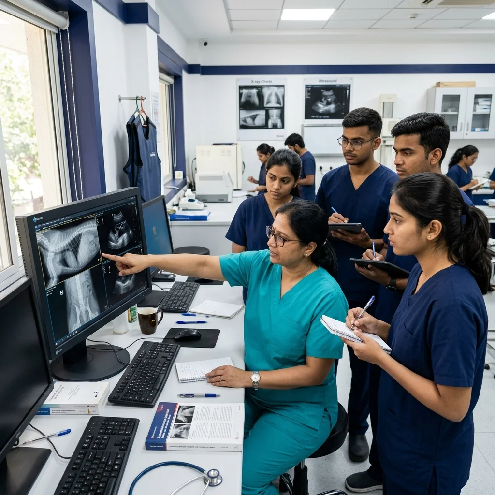
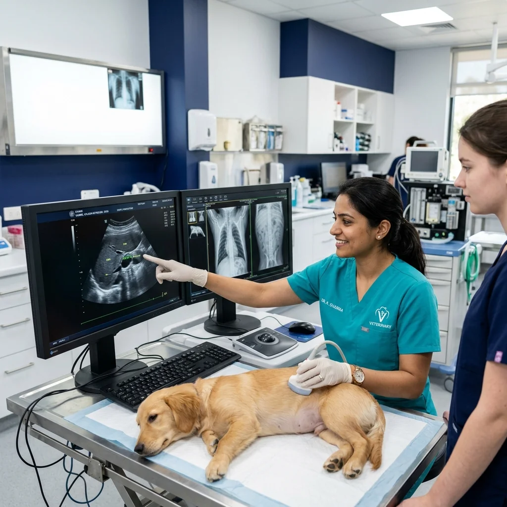
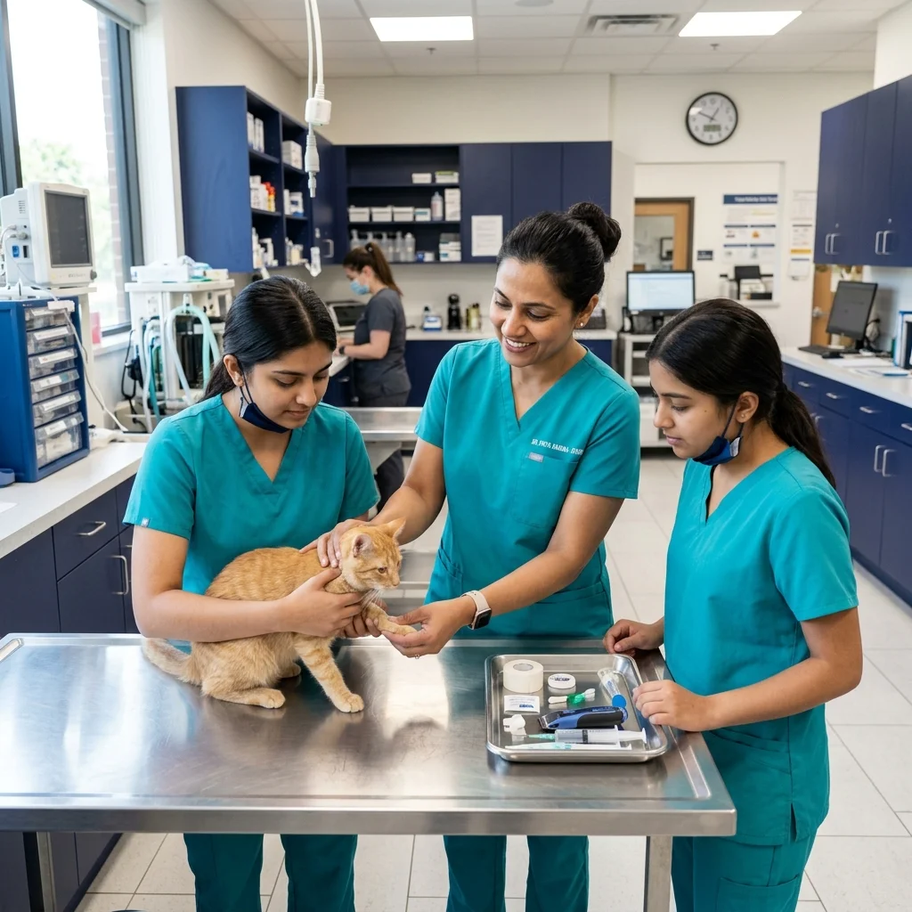
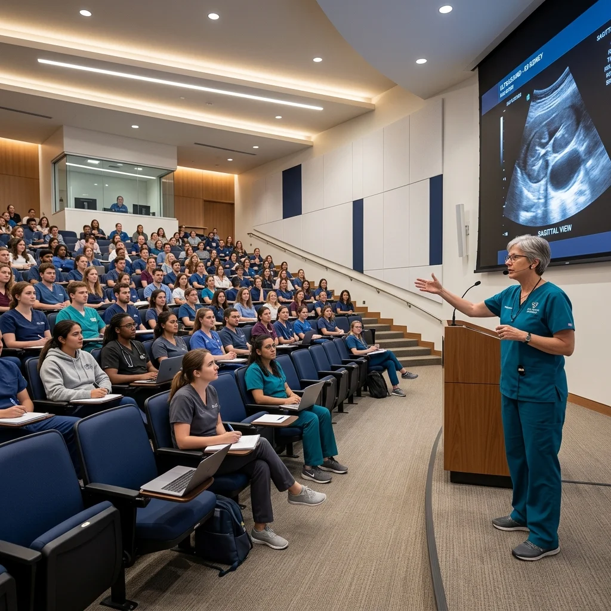

Building Better Veterinarians Through Practical Learning
VetNova is India's dedicated practical training institute engineered to bridge the gap between academic veterinary theory and real-world clinical excellence. We empower BVSc doctors, final-year interns, and paravet staff with manual surgical dexterity, diagnostic clarity, and ethical animal care confidence.

Our Story
How VetNova evolved from a vision into India's premier practical veterinary learning center.
Why VetNova Was Created
Founding specialists and clinic owners recognized a critical dilemma: fresh veterinary graduates possess strong theoretical grounding, yet face immense anxiety during their first independent soft tissue surgeries and diagnostic cases due to insufficient hands-on practice in college curriculums.
Addressing The Learning Gap
We engineered small-batch, scenario-first clinical modules where every doctor executes procedures independently. By removing large audience crowds, trainees build real manual dexterity and decision-making muscle memory under direct specialist supervision.
Establishing The Wagholi Pune Campus
Inaugurated our dedicated 3,000 sq. ft. practical facility in Gawadewadi – Wagholi, Pune, complete with a surgical procedure lab, digital X-ray & ultrasound diagnostic suite, AV lecture theatre, and emergency handling zones.
Vision for Veterinary Education
Having trained over 3,000 veterinarians and nurses, VetNova continues setting the national benchmark for ethical, welfare-blended clinical skill enhancement across small animal practice, emergency care, and advanced surgical specialties.

Dedicated to Raising Clinical Standards
VetNova is led by practicing surgeons, radiology specialists, and experienced clinic owners who share a common passion: raising the baseline standard of veterinary healthcare across India through transparent, uncompromised mentorship.
Infrastructure
Our 3,000 sq. ft. Pune learning centre engineered specifically for veterinary skill acquisition.




3,000 sq ft Campus
Spacious Gawadewadi – Wagholi Pune hub.
Modern Equipment
Digital X-ray & ultrasound diagnostics.
Smart Classrooms
AV-equipped interactive lecture halls.
Live Practice Labs
Clinical simulation & sterile procedure bays.
Why Choose VetNova
Every aspect of our curriculum is engineered for practical performance in real clinical environments.
Hands-on Learning
80% practical procedural execution on anatomical models and simulated clinical cases for genuine manual dexterity.
Expert Faculty
Direct mentorship from senior practicing surgeons, radiologists, and clinic owners with decades of field experience.
Industry Recognition
Certificates respected across private clinics, pet hospitals, and academic institutions for verified clinical readiness.
Modern Facilities
State-of-the-art 3,000 sq. ft. Pune campus equipped with sterile surgical tables, digital X-rays, and ultrasound scanners.
Career Support
Personalized career roadmaps, clinic setup guidance, resume reviews, and placement referral connections.
Recognized Certification
Validates procedural training and hands-on skill exposure post-completion for graduates and paravet staff.
Our Learning Philosophy
Four pillars that define how we train veterinary professionals for high-pressure clinical scenarios.
Clinical First
Prioritizing real patient scenarios, diagnostic reasoning, and emergency decision-making frameworks above pure theory.
Practice Driven
Continuous tactile practice to build surgical muscle memory, tissue handling finesse, and instrument mastery.
Mentor Guided
One-on-one constructive feedback and direct oversight from practicing specialists during every procedural step.
Career Focused
Curriculum structured to directly improve job prospects, surgery confidence, and clinical earning potential.
Meet Our Advisory Board
Guiding VetNova with decades of clinical and academic excellence.

Dr. Ramesh Deshmukh
Senior Surgical AdvisorSmall Animal Soft Tissue & Orthopedic Surgery Specialist.

Dr. Sunita Rao
Radiology & Imaging DirectorVeterinary Diagnostic Imaging & Ultrasonography Consultant.

Dr. Vikram Patil
Academic Curriculum LeadFormer University Professor & Clinical Operations Strategist.

Dr. Ananya Joshi
Animal Welfare & Ethics OfficerCompassionate Care Standards & Shelter Medicine Expert.
Meet Our Faculty
Learn from experienced veterinary specialists actively practicing in leading clinics and animal hospitals.

Dr. Amit Kulkarni
BVSc & AH, MVSc (Surgery)Soft Tissue Surgery & Wound Management Specialist.

Dr. Priya Sharma
BVSc & AH, MVSc (Radiology)Diagnostic Radiology & Abdominal Ultrasound Trainer.

Dr. Rajesh Verma
BVSc & AH, MVSc (Medicine)Emergency & Critical Pet Care Specialist.

Dr. Sneha Nair
BVSc & AH, PgDip (Dermatology)Feline Clinical Practice & Dermatology Instructor.

Dr. Manoj Shinde
BVSc & AH, MVSc (Orthopedics)Bone Plating & Fracture Stabilization Mentor.

Dr. Neha Gupta
BVSc & AH, Cert. Vet NursingParavet Assistant & Surgical Scrub Lead Instructor.
Training Centre Gallery
A glimpse into our Wagholi, Pune practical skill labs, diagnostic suites, and interactive workshop sessions.



Ready to Start Your Veterinary Journey?
Explore our expert-led clinical skill programs or connect with our academic counsellors to find the ideal learning track tailored for your career goals.